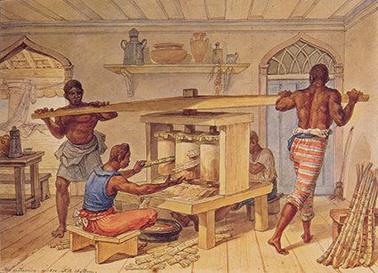
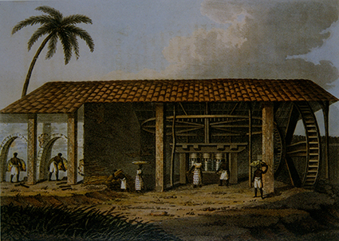
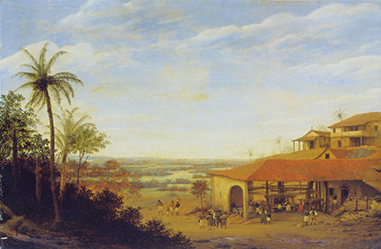

Moinho de açúcar, de Johann Moritz Rugendas. Gravura, 1835. Crédito: JOHANN MORITZ RUGENDAS/FUNDAÇÃO BIBLIOTECA NACIONAL, RIO DE JANEIRO, RJ

Engenho manual que faz caldo de cana, de Jean-Baptiste Debret. Aquarela sobre papel, 1822. Crédito: JEAN-BAPTISTE DEBRET/MUSEUS CASTRO MAYA, RIO DE JANEIRO, RJ

Um engenho de açúcar, de Henry Koster. Gravura, 1816. Crédito: HENRY KOSTER/FUNDAÇÃO BIBLIOTECA NACIONAL, RIO DE JANEIRO, RJ

Engenho de açúcar, de Frans Post. Óleo sobre madeira, , 1661. Crédito: FRANS POST/INSTITUTO RICARDO BRENNAND, RECIFE, PE
![Imagem de uma pintura retratando pessoas e animais em um pátio. No centro, há um engenho de cana-de-açúcar. Duas pessoas estão retirando canas-de- açúcar de uma carroça; uma está carregando a cana sobre os ombros caminhando em direção ao engenho, onde outra pessoa está processando a cana. Ao fundo, há um galpão alto, árvores e um morro. Do lado direito da imagem, há uma casa, de onde duas pessoas observam o trabalho das demais. Na parte de baixo da casa, há duas pessoas, uma delas está ao lado de um cavalo. Do lado esquerdo, à frente do engenho, há três bois e um bode.](../resources/images/enriquecimentos/carrossel/carrossel_s851233mb_7/g24_7ano_s851233Mb_7a.jpg)